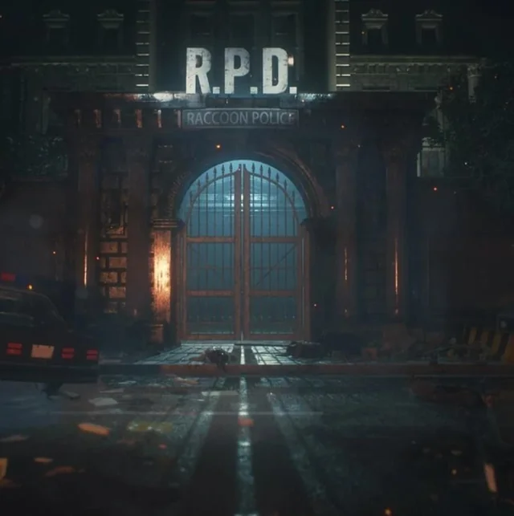
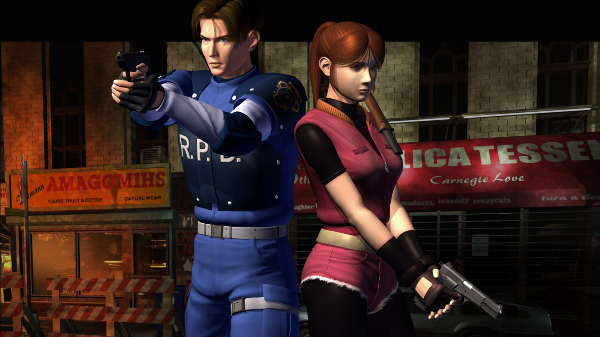
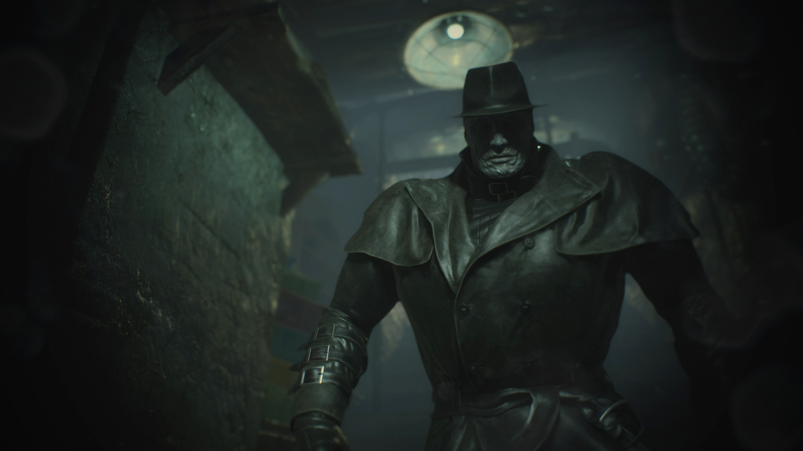

Visão geral

Resident Evil 2 leva o horror da mansão para as ruas de Raccoon City. O jogador acompanha dois novos protagonistas: Leon S. Kennedy, policial em seu primeiro dia de trabalho, e Claire Redfield, que está em busca de seu irmão, Chris.
A cidade foi tomada pelo Vírus-T e pelo Vírus-G, transformando cidadãos em zumbis e criaturas grotescas. RE2 é conhecido pelo seu clima de desespero urbano e pela forma como expande o universo iniciado no primeiro jogo.
Gameplay e mecânicas
Assim como o primeiro jogo, RE2 mantém a estrutura de survival horror clássico:
- Câmeras fixas e ângulos cinematográficos;
- Inventário limitado e necessidade de gerenciar itens;
- Salas seguras com máquinas de escrever e baús compartilhados;
- Puzzles espalhados pela delegacia, esgoto e laboratório.
A grande novidade é o Zapping System, que conecta as campanhas de Leon e Claire. As ações realizadas em uma campanha podem alterar eventos na outra, criando uma sensação de continuidade e aumentando a rejogabilidade.
História e atmosfera
A maior parte do jogo se passa na Delegacia de Polícia de Raccoon City (RPD), um prédio com arquitetura clássica, corredores estreitos e salas que escondem segredos da conspiração da Umbrella.
Personagens como Ada Wong, Sherry Birkin e os próprios Birkin (William e Annette) enriquecem a trama, que mistura drama familiar, bioterrorismo e sacrifício.
A atmosfera sonora, com trilhas tensas e efeitos de passos, janelas se quebrando e gemidos ao longe, reforça constantemente a sensação de perigo iminente.
Análise
RE2 é frequentemente apontado como um dos melhores jogos de survival horror de todos os tempos. Ele refina praticamente tudo: level design, narrativa, ritmo e construção de personagens.
A ideia de mostrar a mesma história de perspectivas diferentes (Leon e Claire) marcou a franquia e inspirou outros jogos a explorar múltiplas campanhas e pontos de vista.
Vendas aproximadas: mais de 6 milhões de cópias (somando versões clássicas).
Impacto: consolidou de vez Resident Evil como uma das maiores franquias da história.
Curiosidades
- O jogo quase foi completamente diferente em sua primeira versão, conhecida como “RE 1.5”.
- A RPD originalmente não era uma delegacia, e sim um museu adaptado.
- Foi um dos jogos mais aguardados da geração PlayStation.
- Recebeu um remake em 2019, reimaginando tudo com câmera sobre o ombro.
Galeria de imagens


